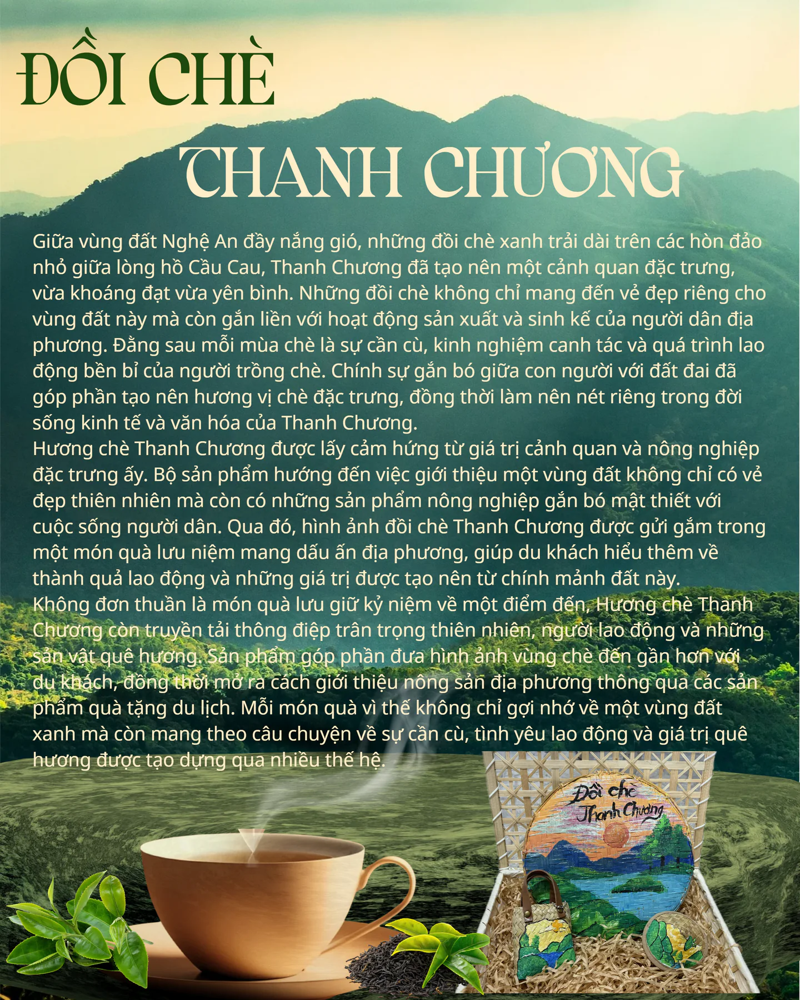

Sắc Xanh Xứ Nghệ

Từ đôi bàn tay khéo léo của người nghệ nhân xứ Nghệ, - những sản phẩm máy trẻ dan mang đậm hồn quê Việt.
Làng Sen quê Bác

Giữa những dấu ấn làm nên bản sắc xứ Nghệ, Làng Sen Kim Liên luôn giữ một vị trí đặc biệt. Đây là quê hương Chủ tịch Hồ Chí Minh, nơi lưu giữ những ký ức về tuổi thơ của Người và những giá trị truyền thống đã trở thành niềm tự hào của dân tộc Việt Nam. Với hình ảnh những nếp nhà tranh giản dị, hàng tre xanh và ao sen thân thuộc, Làng Sen đã trở thành biểu tượng của một miền quê giàu truyền thống, gắn liền với tình yêu quê hương, đất nước và lòng kính trọng dành cho vị lãnh tụ kính yêu. Lấy cảm hứng từ ý nghĩa đặc biệt đó, Làng Sen Quê Bác được lựa chọn làm một trong những chủ đề của bộ sưu tập Sắc Xanh Xứ Nghệ. Câu chuyện về quê hương Chủ tịch Hồ Chí Minh được chuyển tải vào món quà lưu niệm, giúp những giá trị lịch sử trở nên gần gũi hơn với đời sống thường ngày. Thay vì chỉ dừng lại ở việc tham quan và tìm hiểu một địa danh, du khách có thể mang theo một kỷ niệm gắn với vùng đất mình đã đặt chân đến, đồng thời chia sẻ câu chuyện ý nghĩa ấy với gia đình, bạn bè và những người thân yêu.Thông qua Làng Sen Quê Bác, bộ sưu tập Sắc Xanh Xứ Nghệ mong muốn đưa câu chuyện về quê hương của Người đến gần hơn với du khách, đặc biệt là những người trẻ. Mỗi món quà được mang đi từ Nghệ An sẽ trở thành một cách lưu giữ kỷ niệm, một câu chuyện để kể và một dấu ấn để nhớ về vùng đất này. Bởi giá trị của một món quà lưu niệm không chỉ nằm ở hình thức hay công dụng, mà còn ở những điều ý nghĩa được gửi đến người nhận. Với Làng Sen, đó là tình yêu quê hương, lòng biết ơn và niềm tự hào về một vùng đất đã góp phần làm nên những dấu ấn không thể phai mờ trong lịch sử dân tộc.
Cửa Lò bến nhớ

Biển Cửa Lò không chỉ được biết đến bởi bãi cát dài, làn nước trong xanh và vẻ đẹp khoáng đạt của thiên nhiên mà còn bởi nhịp sống bình dị của những con người gắn bó với biển. Qua những chuyến thuyền vươn khơi, hoạt động đánh bắt hải sản và nhịp sinh hoạt của cư dân ven biển, Cửa Lò mang trong mình nét đặc trưng của một vùng biển giàu sức sống. Trải qua thời gian, Cửa Lò đã trở thành một phần trong ký ức của nhiều người, từ những cư dân sinh sống lâu đời bên biển đến những du khách từng có . dịp đặt chân đến nơi đây. Mỗi người có thể lưu giữ một ấn tượng khác nhau về vùng biển này, nhưng tất cả đều góp phần tạo nên hình ảnh một Cửa Lò vừa sôi động, vừa bình dị và gần gũi. Chính những nét đẹp ấy đã trở thành nguồn cảm hứng để hình thành chủ đề Cửa Lò Bến Nhớ trong bộ sưu tập quà lưu niệm Sắc Xanh Xứ Nghệ. Tên gọi Cửa Lò Bến Nhớ mang ý nghĩa về sự gắn bó và lưu luyến đối với một miền biển đã từng ghé qua. Trong bộ sưu tập Sắc Xanh Xứ Nghệ, chủ đề này không chỉ góp thêm sắc màu của biển vào bức tranh quê hương Nghệ An mà còn lưu giữ một nét văn hóa đặc trưng của miền đất ven biển.
Dấu ấn Sông Lam

Trên dải đất Nghệ An, sông Lam không chỉ là một dòng sông gắn liền với cảnh quan thiên nhiên mà còn là biểu tượng thân thuộc trong đời sống và tâm thức của người dân xứ Nghệ. Dòng sông bắt nguồn từ núi rừng, chảy qua những miền quê, bồi đắp phù sa cho ruộng đồng và nuôi dưỡng cuộc sống của bao thế hệ. Qua năm tháng, sông Lam đã chứng kiến những đổi thay của quê hương, gắn bó với hoạt động lao động, sinh hoạt và những kỷ niệm bình dị của người dân hai bên bờ. Bởi vậy, đối với nhiều người, sông Lam không đơn thuần là một địa danh mà còn là hình ảnh đại diện cho quê hương, nơi lưu giữ những tình cảm thân thương và ký ức khó phai.Điều làm nên ý nghĩa đặc biệt của sông Lam chính là sự gắn bó bền chặt giữa dòng sông với con người và văn hóa xứ Nghệ. Dòng nước ấy đã đi vào lời ca, câu chuyện dân gian và đời sống thường ngày, trở thành một phần trong ký ức của những người sinh ra và lớn lên trên mảnh đất này. Dù cuộc sống có nhiều đổi thay, sông Lam vẫn giữ vị trí riêng trong lòng người dân Nghệ An, gợi nhắc về quê nhà, về những năm tháng gắn bó và tình cảm dành cho nơi mình thuộc về. Chính sự gần gũi ấy đã khiến dòng sông trở thành một trong những biểu tượng tiêu biểu khi nhắc đến bản sắc xứ Nghệ.Từ tình cảm và ý nghĩa đó, Dấu ấn sông Lam ra đời như một món quà lưu niệm mang câu chuyện về dòng sông quê hương đến gần hơn với du khách. Không chỉ lưu lại kỷ niệm về một chuyến đi, món quà còn giúp người nhận hiểu thêm về một biểu tượng văn hóa của Nghệ An và tình cảm sâu nặng của người dân dành cho quê hương.
Ví Dặm tình ca

Trong đời sống văn hóa của người dân Nghệ An và Hà Tĩnh, dân ca Ví, Dặm từ lâu đã trở thành một nét đẹp không thể tách rời. Những câu hát mộc mạc được cất lên trong lao động, sinh hoạt và những dịp gặp gỡ đã thể hiện tâm hồn chân thành, tình cảm sâu nặng cùng cách ứng xử giàu nghĩa tình của con người xứ Nghệ. Qua lời ca, người dân gửi gắm tình yêu quê hương, tình cảm gia đình, tình yêu đôi lứa và những tâm tư trong cuộc sống thường ngày. Không cầu kỳ về ngôn từ hay giai điệu, Ví, Dặm chinh phục người nghe bằng sự gần gũi, sâu lắng và nét riêng khó trộn lẫn. Lấy cảm hứng từ di sản văn hóa đặc biệt ấy, Ví, Dặm Tình Ca được hình thành như một món quà lưu niệm mang theo âm hưởng và tình cảm của quê hương Nghệ An. Nếu lời ca được lưu truyền qua giọng hát thì câu chuyện về Ví, Dặm có thể tiếp tục đến với nhiều người qua những món quà gần gũi trong cuộc sống. Đây cũng là cách đưa một di sản văn hóa đến gần hơn với du khách, đặc biệt là thế hệ trẻ, để những người chưa có dịp tìm hiểu có thể biết đến và thêm yêu nét đẹp nghệ thuật dân gian của quê hương.Ví, Dặm Tình Ca mang thông điệp về sự trân trọng và tiếp nối những giá trị văn hóa truyền thống. Mỗi món quà không chỉ lưu giữ kỷ niệm về vùng đất Nghệ An mà còn góp phần kể tiếp câu chuyện về những làn điệu dân ca đã nuôi dưỡng tâm hồn bao thế hệ người dân xứ Nghệ. Để dù ở bất cứ nơi đâu, tiếng hát quê hương vẫn luôn được nhớ đến, gìn giữ và ngânvang trong đời sống hôm nay
Đồi chè Thanh Chương

Giữa vùng đất Nghệ An đầy nắng gió, những đồi chè xanh trải dài trên các hòn đảo nhỏ giữa lòng hồ Cầu Cau, Thanh Chương đã tạo nên một cảnh quan đặc trưng, vừa khoáng đạt vừa yên bình. Những đồi chè không chỉ mang đến vẻ đẹp riêng cho vùng đất này mà còn gắn liền với hoạt động sản xuất và sinh kế của người dân địa phương. Đằng sau mỗi mùa chè là sự cần cù, kinh nghiệm canh tác và quá trình lao động bền bỉ của người trồng chè. Chính sự gắn bó giữa con người với đất đai đã góp phần tạo nên hương vị chè đặc trưng, đồng thời làm nên nét riêng trong đời sống kinh tế và văn hóa của Thanh Chương.
Hương chè Thanh Chương được lấy cảm hứng từ giá trị cảnh quan và nông nghiệp đặc trưng ấy. Bộ sản phẩm hướng đến việc giới thiệu một vùng đất không chỉ có vẻ đẹp thiên nhiên mà còn có những sản phẩm nông nghiệp gắn bó mật thiết với cuộc sống người dân. Qua đó, hình ảnh đồi chè Thanh Chương được gửi gắm trong một món quà lưu niệm mang dấu ấn địa phương, giúp du khách hiểu thêm về thành quả lao động và những giá trị được tạo nên từ chính mảnh đất này.
Không đơn thuần là món quà lưu giữ kỷ niệm về một điểm đến, Hương chè Thanh Chương còn truyền tải thông điệp trân trọng thiên nhiên, người lao động và những sản vật quê hương. Sản phẩm góp phần đưa hình ảnh vùng chè đến gần hơn với du khách, đồng thời mở ra cách giới thiệu nông sản địa phương thông qua các sản phẩm quà tặng du lịch. Mỗi món quà vì thế không chỉ gợi nhớ về một vùng đất xanh mà còn mang theo câu chuyện về sự cần cù, tình yêu lao động và giá trị quê hương được tạo dựng qua nhiều thế hệ.
Vuốt hoặc dùng phím ← → để lật trang